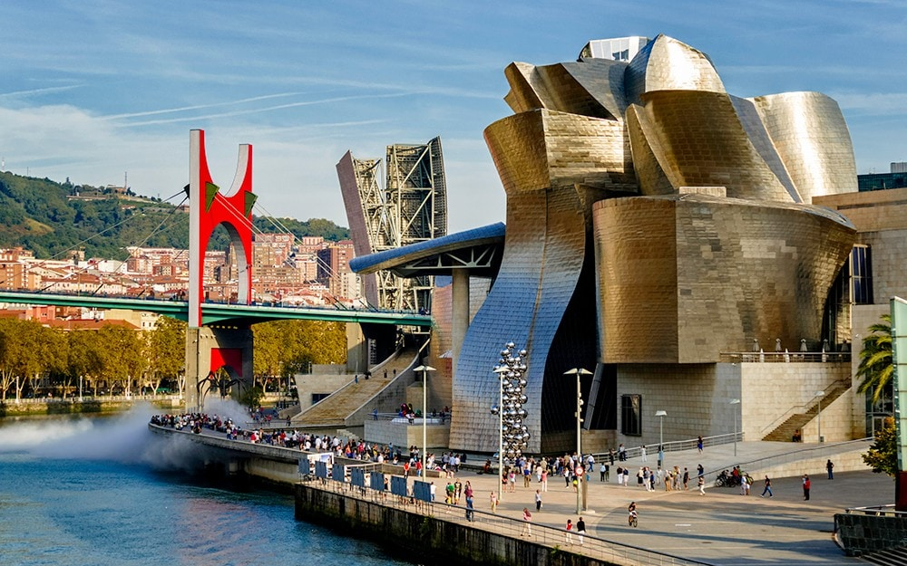

- 
Tourist information
About intresting places
In Bilbao, you can try special Basque food, visit museums, walk around wonderful Casco Viejo streets, get on Mount Artxanda, Climb the stairway to heaven at San Juan de Gaztelugatxe and come to Whale Watchin

About communication
Metro in Bilbao Line 1 - Etxebarri/Plentzia, length 33km, number of stations 29. Line 2 - Basauri/Kabiezes, length 22km, number of stations 25. Mamariga Shuttle - Santurtzi/Mamariga, length 0.5km, number of stations 2. Line 3 - Kukullaga/Matiko, length 5.9km, number of stations 7. Airport Line - Matiko/Airportua, length 65km, number of stations 3. Line 4 - Matiko/Rekalde, length 6km, number of stations 7. Line 5 - Etxebarri/Ursansolo, length 8.8km, number of stations 6. Total of stations 62 and 68.3km Local administrations, city councils and Bizkaia provincial council provide city and intercity bus transport under their own names and characteristics, such as Bilbobus, Etxebarri-Bus, Bizkaibus, etc. In Bilbao, public transport is bus, metro and cable railways. each Administration set its individual tariff system, and the next queue of trains, assortment of products or tickets, prices, etc. There are many agencies in Bizkaia with powers in the field of public passenger transport, each with its own operators. For this reason, each of the different Bizkaia public transport operators has its own fare system, i.e. its own zones, its own range of tickets and its own prices. The rates described here are those adopted by the respective Administrations. Basque public institutions are currently working on coordinating the various public transport systems. His first achievements were the Creditrans single ticket, the Barik contactless card and the adoption of a joint zoning, which is gradually being used by various operators.
-

About organisation
Education and Mobility is a company that supports the international mobility of students and professionals of Volation Education Training to the Basque Country and the Canary Islands under Erasmus + programs.
Located in Spain, this company offers two different places to do business: Bilbao - the main city of the Basque Country and Fuerteventura in the Canary Islands. Education and Mobility promote and support international mobility projects, providing support and providing the necessary infrastructure for their implementation.
About Weather
Climate in bilbao is wet oceanic on the coast, and continental inland. The temperatures in Bilbao are very low for Spain (average 8-24º C)
Special Basque food:
Tolosa bean dishes, paprikas from Lekeitio, pintxos (Basque tapas), Idiazabal sheep's cheese, txakoli (sparkling white-wine), and Basque cider.
Bilbao Beginnings:
Ancient burial sites which date back more than 6,000 years have been discovered in the region. Meanwhile, other evidence of human inhabitation has been found dating back to around the 3rd century BC. However, the history of Bilbao begins in earnest during the 14th century, when it was the first of several Biscayan municipalities.
Bilbao population and facts:
355,000 people live in bilbao. Electricity: 220 volts Time Zone: GMT +1 Country Dialing Code: 34 Area Code: 94.
Bilbao Region: Euskadi Province: Vizcaya Country: Spain
About Company
Education and Mobility is a company that supports the international mobility of students and professionals of Volation Education Training to the Basque Country and the Canary Islands under Erasmus + programs. Located in Spain, this company offers two different places to do business: Bilbao - the main city of the Basque Country and Fuerteventura in the Canary Islands. Education and Mobility promote and support international mobility projects, providing support and providing the necessary infrastructure for their implementation.
Contact EDUCATION & MOBILITY Bilbao:
Office: (+34) 661 27 48 53 Mobile: (+34) 661 27 48 53 ioa@educationandmobility.com Plaza Landabaso 5 Ext, 1ª Planta, Dpto. G 48015, Bilbao, Basque Country. Spain